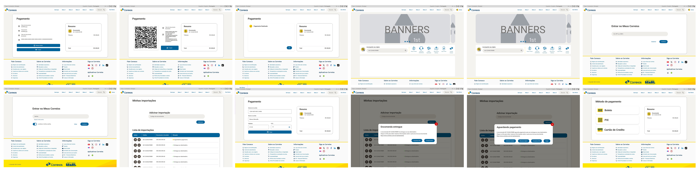

Relato da Avaliação so Prototip de Alta Fidelidade das Minhas Importações
Introdução
Este artefato contém o relato dos resultados obtidos na sessão de observação do protótipo de alta fidelidade produzido por Pablo S. Costa, que tem como foco a funcionalidade de realizar uma simulação de envio de encomendas e ter como resultado preços e prazos de envio. Ele servirá para certificar que as informações principais e de extrema importância para o projeto sejam exploradas e representadas de forma clara e ordenada, auxiliando na compreensão dos dados e informações coletadas nas análises para se obter o melhor uso dessas, assim trazendo melhorias para o projeto.
Metodologia
Este artefato leva como base alguns tópicos elecandos no livro IHC por Barbosa e Silva(2021, p.303), para estruturar esse relato dos resultados da análise do protótipo de alta fidelidade e também leva em consideração o artefato do planejamento da análise. Os tópicos a serem desenvolvidos neste artefato são:
- Objetivos da avaliação;
- Metodologia da prototipação
- Número e perfil dos avaliadores e participantes
- Tarefas executadas pelos participantes
- Lista de Problemas encontrados.
Objetivos da avaliação
Os objetivos desse artefato, conforme estabelecido no planejamento da avaliação, são:
- Analisar apropriação da tecnologia
- Comparar ideias alternativas de design
- Identificar problemas na interação e interface
Metodologia da prototipação
O método de avaliação que será utilizado será o de teste de usabilidade através do protótipo de alta fidelidade, com um questionário para o usuário e um para ser respondido com base nas ações do usuário ao utilizar e avaliar o protótipo. Nas Tabelas 2, 4 e 4, respectivamente, estão as perguntas pré teste, perguntas para identificar as impressões e opiniões que o usuário obteve ao utilizar o protótipo, e também se a utilização do protótipo pelo participante se dá de maneira correta cumprindo com os objetivos propostos.
Protótipo
Abaixo nas figuras 1 e 2 temos as telas dos protótipos e o protótipo em si.
Figura 1 - Telas do protótipo de alta fidelidade.

Fonte: Pablo S. Costa, 2024.
Link para as telas do protótipo de alta fidelidade.
Figura 2 - Protótipo de alta fidelidade.
Fonte: Pablo S. Costa, 2024.
Backup do protótipo de alta fidelidade.
Número e perfil dos avaliadores e participantes
Na tabela 4, temos a tarefa a ser avaliada, os participantes e seus papéis e a data do teste de usabilidade. Na escolha dos participantes o primeiro Diego Medeiros foi escolhido de acordo com a disponibilidade e aptidão em usar o Minhas importações, por ser influenciador digital e ter diversos patrocínios de recebidos internacionais, o que o faz ter um constante uso da plataforma mesmo. A escolha da segunda usuário é por ser uma representante feminina de um grupo majoritariamente masculino, e se encaixar ao perfil de usuário recomendado e ter disponibilidade. O terceiro usuário Matheus foi escolhido por sua grande aptidão tecnológica e bastante reconhecimento da plataforma dos Correios, sendo professor e também empresário de um Clube de beach Tennis. A escolha do último usuário Wirley foi por se encaixar no perfil de usuário e ter se disponibilizado por participar.
Tabela 4 - Cronograma executado da realização das entrevistas do protótipo de alta fidelidade.
| Tarefa | Entrevistador | Entrevistado | Horário | Data | Local |
|---|---|---|---|---|---|
| Gerenciar Minhas Imprtações | Pablo S. Costa | Diego Medeiros - 34 anos | 16:30 - 16:42 | 01/07/2024 | Estudio do entrevistado |
| Gerenciar Minhas Imprtações | Pablo S. Costa | Heloisa Lima - 27 anos | 17:00 - 17:11 | 03/07/2024 | Domicilio |
| Gerenciar Minhas Imprtações | Pablo S. Costa | Matheus Wesley - 29 Anos | 20:30 - 21:00 | 03/07/2024 | Domicilio |
| Gerenciar Minhas Imprtações | Pablo S. Costa | Wirley Israel - 19 Anos | 22:00 - 22:15 | 03/07/2024 | Domicilio |
Fonte: Pablo S. Costa, 2024.
Gravações
Abaixo temos as gravações das entrevistas realizadas que estão no vídeos 1, 2 e 3.
Vídeo 1 - Entrevista do protótipo de alta fidelidade com o usuário Diego Medeiros dos Santos.
Fonte: Pablo S. Costa, 2024.
Vídeo 2 - Entrevista do protótipo de alta fidelidade com o usuário Heloisa Lima.
Fonte: Pablo S. Costa, 2024.
Vídeo 3 - Entrevista do protótipo de alta fidelidade com o usuário Matheus.
Fonte: Pablo S. Costa, 2024.
Vídeo 4 - Entrevista do protótipo de alta fidelidade com o usuário Wirley.
Fonte: Pablo S. Costa, 2024.
Respstas
Tabela 2 - Perguntas do questionário pré-teste.
| ID | Pergunta | Diego | Heloisa | Matheus | Wirley |
|---|---|---|---|---|---|
| 1 | Qual o seu nome completo? | Diego Medeiros dos Santos | Heloísa Lima | Matheus Wesley Santana Lima | Wirley Israel Apolônio de Oliveira |
| 2 | Qual a sua idade? | 34 anos | 27 anos | 29 anos | 19 anos |
| 3 | Qual a sua ocupação? | Influenciador digital | Empresária | Professor de beach Tennis | Empresário |
| 4 | Você descreveria seu grau de experiência e facilidade em utilizar artefatos tecnologicos em "Muito boa", "Boa", "Média", "Ruim", "Muito ruim" | Boa | Muito boa | Muito boa | Boa |
Fonte: Pablo S. Costa, 2024
Tabela 3 - Perguntas do questionário para o usuário pós-teste.
| ID | Pergunta | Diego | Heloisa | Matheus | Wirley |
|---|---|---|---|---|---|
| 1 | Como você avalia o design apresentado no protótipo?(péssimo, ruim, médio, bom, ótimo) | Bom | Ótimo | Ótimo | Otimo |
| 2 | Você acredita que a disposição dos itens e elementos na tela está bem organizada e de fácil visualização? | Sim. | Está fácil de visualizar e bem organizado | Sim | Sim |
| 3 | Você teve obstáculos ao realizar alguma ação na aplicação ou ao utilizar a funcionalidade proposta? | Não | Não | Não | Não |
| 4 | Foi encontrado alguma falha durante o uso da funcionalidade apresentada? | Não | Não | Não | Não |
| 5 | As tarefas mostradas são plauzíveis e representam bem a realidade? | Sim | Sim | Sim | Sim |
| 5 | Você sugere alguma mudança no design da interface ou nas funcionalidades apresentadas? | Não, Não. | Não está ótimo. | Não | Não |
Fonte: Pablo S. Costa, 2024
Tabela 4 - Perguntas do questionário pós-teste.
| ID | Pergunta | Diego | Heloisa | Matheus | Wirley |
|---|---|---|---|---|---|
| 1 | O usuário utilizou de forma correta a funcionalidade? | Sim | Sim | Sim | Sim |
| 2 | Foram atingidos os objetivos principais do participante ao testar o protótipo? | Sim | Sim | Sim | Sim |
| 3 | O usuário teve obstáculos para concluir a tarefa proposta? Se sim quais foram? | Não houve obstaculos. | Não houve obstaculos. | Não houve obstaculos. | Não houve obstaculos. |
| 4 | Em quais partes do sistema esses problemas e obstáculos são encontrados? E com qual frequência ocorrem? | Não se aplica. | Não se aplica. | Não se aplica. | Não se aplica. |
| 5 | O usuário requereu auxílio para compreender alguma parte da interface ou para realizar alguma ação? Se sim quantas vezes? | Não precisou. | Não precisou. | Não precisou. | Não precisou. |
Fonte: Pablo S. Costa, 2024
Lista de Problemas de usabilidade corrigidos
Abaixo temos a tabela 5 com os problemas de usabilidades encontados ao usar o Minhas Importações e que nesse prototipo ja foram corrijidos antes da avaliação.
Tabela 5 - Lista de Problemas de usabilidade corrigidos.
| Local onde ocorreu | Fatores de Usabilidade Prejudicados | Descrição e Justificativa do Problema | Correção Realizada no Protótipo | Indicação se o Problema Voltou a Ocorrer Depois da Correção |
|---|---|---|---|---|
| Tela inicial | Estética e design minimalista | A página inicial contém muitas informações a deixando poluída e carregada, indo contra as estéticas e design minimalista. | Sim | Não |
| Todo o site | Consistências e padrões | Todo site dos Correios há uma alternância de tecnologias, padrões de design, cores e estruturas de forma inconsistente e despadronizarda. | Sim | Não |
| Login | Prevenção de erros | Na realização de login, existe áreas de logins para serviços providos pelos Correios separados em diversas partes da plataforma. Causando uma confusão no momento em que o usuário realiza sua autenticação já que um mesmo usuário dos Correios tem diversos logins diversas senhas e serviços. | Sim | Não |
| Meus Correios | Estética e design minimalista | Ao acessar a área restrita meus Correios são disponibilizados as informações de conta do usuário prejudicando a estética de design minimalista, visto que esta página tem a finalidade de disponibilizar os serviços dos Correios. | Sim | Não |
| Minhas Importações | Estética e design minimalista | A estruturação e exibição na tela principal e nas posteriores em minhas importações são poluídas visivelmente indo contra a estética de design minimalista. | Sim | Não |
| Todo o site | Ajuda no reconhecimento, diagnóstico e correção de erros. | Durante o acesso há uma inconsistência nos padrões de Acessibilidade causando uma confusão sobre quais as funcionalidades disponíveis em seus diversos serviços, quais as linguagens disponíveis, tutoriais e menus de ajudas disponíveis | Sim | Não |
Fonte: Pablo S. Costa , 2024
Lista de Problemas de usabilidade não corrigidos
Com base nos dados obtidos pelas as entrevistas, não há outros problemas de usabilidade para se reportar após a avaliação. disto isso com o presente resultado não se faz necessidade de reprojeto.
Bibliografia
- Barbosa, S. D. J.; Silva, B. S. da; Silveira, M. S.; Gasparini, I.; Darin, T.; Barbosa, G. D. J. (2021) Interação Humano-Computador e Experiência do usuário. Autopublicação. ISBN: 978-65-00-19677-1.
Histórico de Versão
| Versão | Data | Descrição | Autor | Revisor |
|---|---|---|---|---|
1.0 |
03/07/2024 | Criação do documento | Pablo S. Costa | Ricardo Augusto |